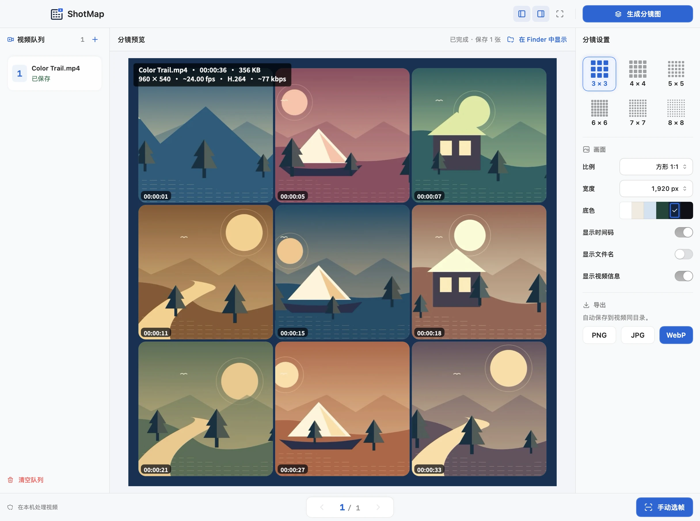

导出带视频信息的方形 WebP 分镜图
将分镜图设为 1:1，保留时间码并加入源视频信息。
示例使用 macOS 13 或更高版本上的 ShotMap 0.2.20，以及一段 36 秒、960 × 540 的 Color Trail.mp4。请把视频放在有写入权限的文件夹中。
- 将 Color Trail.mp4 加入队列，在分镜设置中选择 3 × 3、方形 1:1 和 1920 px。
- 选择深蓝色底色，保留显示时间码，开启显示视频信息。信息区已包含文件名，单独的文件名开关可以保持关闭。
- 在导出中选择 WebP，点击生成分镜图。生成后点击在 Finder 中显示。

核对成品
在 Finder 的「显示简介」中确认扩展名为 .webp，再用「预览」打开图片。本例的 1:1 预设实际导出为 1920 × 1919 px。核对每帧的时间码和左上角的视频信息。